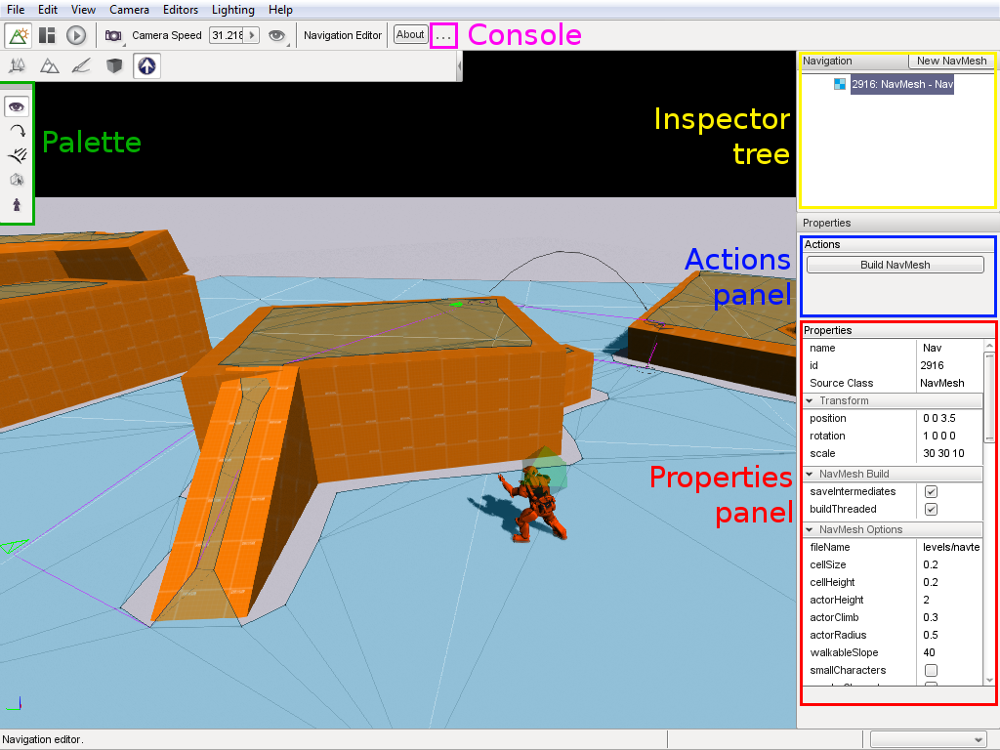
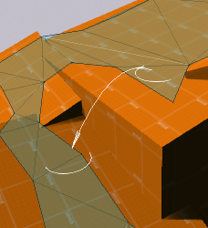
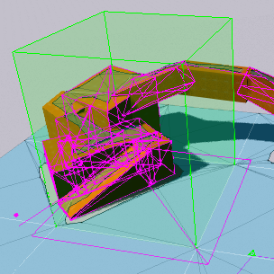
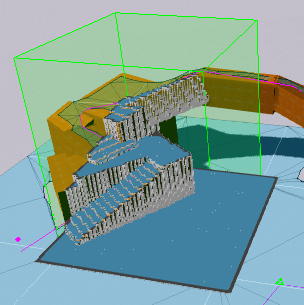
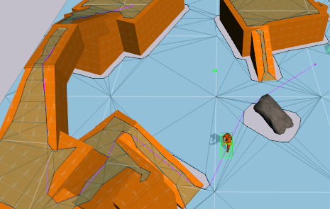
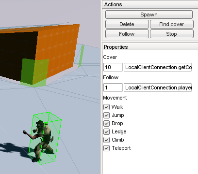

USER MANUAL
So you've played around with the nav editor a bit, but now you want to learn more about what you can do with Walkabout. This is the guide for you! As well as being an in-depth reference manual for Walkabout's features, this document will provide you with the knowledge required to make full use of Walkabout's editor and script interfaces.
CONTENTS
Nav Editor
Overview
The Nav editor is designed to help you perform the most common tasks you'll need to do when setting up Walkabout navigation in your game. While Recast fully automates the process of actually creating a NavMesh, there are lots of ways to tweak and modify the process, as well as tasks to do that cannot be automated, such as tweaking cover points and jump links.
The interface
When you open up the nav editor, you'll see something like the image below. The following sections explain each of the highlighted interface features.
The Nav Editor interface in Inspect mode.
The palette
The palette is where you switch between the different modes the nav editor offers. Each mode has a particular set of functions associated with it. The Actions panel and Properties panel show different content specific to the mode the editor is in.
| Icon | Mode | Description |
|---|---|---|
 | Inspect | Allows you to edit NavMesh properties and build entire NavMeshes. |
 | Link | Lets you edit jump links. |
 | Cover | Lets you auto-generate and tweak CoverPoints. |
 | Tile | A debug viewer and a way to rebuild individual tiles in the editor. |
 | Test | Let some AIPlayers loose on your level! |
Inspector tree
This window is visible in all nav editor modes, showing you a list of all NavMesh objects in your mission. You can select NavMeshes here, and create new ones as well.
IMPORTANT! Most operations in the following editor modes rely on a NavMesh being selected, so if you're pressing buttons and nothing's happening, glance at the Inspector!
Actions panel
This area contains buttons that perform actions specific to the current mode you're in. For example, in Inspect mode, this panel contains the button that builds the NavMesh, whereas in Cover mode, it has a button that creates cover points.
Properties panel
This area enables you to view and change options relevant to the current mode you're in. For example, in Inspect mode, this window is an inspector that lets you view and edit all the console members of the currently-selected NavMesh. In Tile mode, it contains rendering options.
The console
In the Nav editor toolbar, the  button opens the console.
This small window contains output data from the navmesh build process, including build times and any errors.
Typically, you should not need to use it.
button opens the console.
This small window contains output data from the navmesh build process, including build times and any errors.
Typically, you should not need to use it.
Inspect mode
This mode lets you view the properties of each NavMesh in your level (using the browser in the top-left). The default NavMesh properties should work well for small- to medium-sized NavMeshes, but if you have a special situation or want to tweak your NavMesh's performance, here's a guide to a few of the different parameters that affect NavMeshes:
Build properties
| Member | Description |
|---|---|
| cellSize | The size (in metres) of the voxel cells your geometry is turned into. ou can view voxels using Tile mode (see below). Smaller values mean builds take longer (because there are more voxels to process), but the results will be closer to your actual level geometry. |
| cellHeight | The height (in metres) of the voxels. Smaller values mean that the NavMesh sits closer to surfaces. In general, cellSize and cellHeight should be roughly the same. |
| walkableRadius | The distance away from walls and corners the NavMesh should maintain. You should set this close to the radius of a typical character who will use the mesh. |
| walkableHeight | How tall a character can be! This affects areas with overhangs. |
| walkableClimb | Size of ledges a character can climb or jump up. Beware when using large cellHeight values - sometimes voxels on a slope can be treated as a ledge, and the NavMesh will be generated oddly. If your mesh doesn't appear on slopes where it should, try making walkableClimb larger than cellHeight. |
| tileSize | To allow larger meshes and faster build-times (as well as real-time rebuilds), NavMeshes are split into tiles. This property defines the dimensions of each tile in metres. You can view a NavMesh's tiles in Tile mode (see below). |
| maxTiles | The maximum number of tiles the mesh is allowed to generate. If your navmesh doesn't cover the entire area defined by its box, try increasing this limit! |
| maxPolysPerTile | As its name suggests, this is a limit upon the number of polygons in each NavMesh tile. If some of your very dense tiles seem to be built incorrectly, try increasing this number. |
Character properties
| smallCharacters | Allows 'small' type characters to use this NavMesh. For more information on character sizes, see the section on Character types below. |
| regularCharacters | Allows regular-sized characters to use this NavMesh. |
| largeCharacters | Allows large characters to use this NavMesh. |
| vehicles | Allows characters who drive vehicles to use this NavMesh. Whenever an AIPlayer is mounted to a Vehicle, they will try to only use NavMeshes with this property set. |
Editing properties
| saveIntermediates | If this box is checked, the engine will save the intermediate data generated during a NavMesh build, allowing you to view debug information in Tile mode. You should only check this if there's a problem with your NavMesh and you want to debug it. |
| backgroundBuild | When checked, your NavMesh will not build instantly, but spread the process over a longer period of time. This lets you keep editing while the NavMesh builds. |
| fileName | If this filename is not blank, when you save your mission, the NavMesh data will be saved to this file, and loaded up from it when you re-load the mission. You should always use this feature, except in very special circumstances! |
Link mode
This mode allows you to connect parts of your NavMesh using one-way links that signify some method of moving not accounted for by the mesh itself - such as jumping down a ledge, using a teleporter, or climbing a ladder.
Example of an off-mesh link.
The image above is a good example of a link - the white line connects the NavMesh across a small ledge where a character might be able to drop down if they're in a hurry!
- Left-click with no link already selected to create a new link - your first click defines the link's starting point, and your second its end point. Until you rebuild the NavMesh, the link will be rendered red, to remind you that characters won't use it yet.
- Hold shift while creating a second point to maintain the starting point, so you can add multiple links from the same starting point efficiently.
- Left-click to select a link, which allows you to inspect its properties.
- Delete a selected link with the delete key. Until you rebuild the NavMesh, the link will still be rendered, red in colour, and without the circles at its head and tail. This reminds you that until the mesh is rebuilt, characters will still use that link for pathfinding!
After modifying links, you'll need to re-build your NavMesh to enable them - after doing this, the links will change colour from red to black. Using the 'rebuild links' button in the Actions panel rebuilds only the parts of your NavMesh where links have ben edited.
Links can have different types. When youplace a link, it is automatically classified based on its dimensions. If a link travels more horizontally than it drops, it is classified as a jump - otherwise, it's a drop. You can manually edit the type of a link you have selected in the 'properties' window on the left. Note that a link may belong to any combination of possible tyeps. The different types are described below.
| Type | Description |
|---|---|
| Walk | Signifies movement over open, dry land. |
| Jump | Tells the character that they must jump immediately to use this link. |
| Drop | Signifies that a small drop is required. |
| Ledge | Signifies that the character will soon reach a ledge, and must jump then, not now. |
| Climb | Signifies that the character must climb a ladder or other such surface to traverse this link. Note that Walkabout does not implement climbable surfaces; this feature is included for compatibility with your own modifications. |
| Teleport | This link is a teleporter. |
Cover mode
Walkabout allows you to automatically generate cover points along the edges of a NavMesh. These can be used in your AI scripts with the AIPlayer::findCover function (see the Scripting section below). CoverPoints with different sizes and peek directions.
With a NavMesh selected, hit the 'create cover points' button to generate cover points on the selected mesh. Don't forget to specify appropriate settings in Inspect mode first! (Some relevant properties are shown below.) You'll see cover points appear around the edges of your mesh. They're all created as regular objects in the level, so you can edit them in the World editor if you find Walkabout's automatic placement lacking, or if you want to manually control the areas where the AI should take cover.
Cover properties
| Member | Description |
|---|---|
| coverGroup | The name of a SimGroup where the CoverPoints this NavMesh creates should be put. WARNING! The NavMesh will delete everything in this group when you create its cover points, so don't use it for anything else! |
| coverDist | The distance to search from a NavMesh edge to a cover surface. If your NavMesh does not generate cover points in locations where the mesh edges are far from the walls, tey increasing this value. |
| peekDist | The horizontal distance that determines whether a CoverPoint can 'peek' around a corner. |
| innerCover | If checked, CoverPoints will be generated all along the edges of the NavMesh - if not, then they'll only be added at the corners. WARNING! Enabling this option may generate a lot of CoverPoints! |
CoverPoints have several 'peek' directions. This represents directions in which there is no geometry, suitable for characters hiding at that location to peek in. Peek directions are represented as thin green arrows drawn on the CoverPoint. Peek directions are only generated by Walkabout - it's your AI's responsibility to use them! For more information, see the Scripting section below.
Tile mode
This mode allows you to view detailed information about each tile in the selected NavMesh and rebuild them individually if you so desire. You can select a tile in the mesh by left-clicking it. The currently-selected tile will render additional information according to the options set in the box to the right of the main editor window.
The render input option, when active, will render in pink the input geometry used to generate the NavMesh in that tile, as above. The render voxels option renders the voxelised representation of that geometry. These options help you to diagnose problems when the NavMesh has not come out the way you want it to!
A piece of geometry with input, and its voxelisation.
With a tile selected, hit the 'build tile' button to rebuild the NavMesh just in that small location.
IMPORTANT! If you don't have saveIntermediates checked in your NavMesh's properties when it is built, then you will not see any input or voxels rendered!
Test mode
Test mode allows you to spawn and control AIPlayers, moving them around the level to test the NavMeshes you have created. This mode exists mainly to allow you to quickly test that your NavMesh works appropriately for your level geometry - for example, checking tight corners and underhangs.
A selected AIPlayer follows a path through the level.
- Ctrl-click on your level to create an AIPlayer object. You can also click the 'Spawn' button in the Actions panel. The datablock used is specified in the Nav Editor settings.
- Left-click an AIPlayer to select it.
- With an AIPlayer selected:
- Delete a selected AIPlayer with the delete key.
- Left-click on your level to make the character find a path to a destination.
- Shift-left-click to deselect an AIPlayer.
The buttons in the actions box give you access to additional AIPlayer features. You can make the AIPlayer find cover, or follow another object. There's also a stop button in case you want them to stop chasing you!
Properties and actions in Test mode.
The properties window lets you modify properties for following, cover-finding, and AIPlayer pathfinding. The two text fields in the 'cover' section alter the cover search radius, and the location to find cover from, respectively. The latter field can be a vector, or youcan enter a function. By defult, the box gets the position of the object you are controlling, so AIPlayers will hide from your free camera or Player. These properties are used when you press the 'Take cover' button in the actions box. The fields under 'follow' determine the follow radius and the follow object when you click the 'Follow' button. By default, AIPlayers will follow your Player.
The final section of the properties window contains checkboxes for the different types of terrain the currently-selected AIPlayer is allowed to use. They apply to the currently-selected AIPlayer.
Scripting
This section will describe the script interface to Walkabout's new classes and objects.
AIPlayer
Walkabout provides lots of functions in the AIPlayer class to provide easy access to common navigation needs.
Pathfinding
To use pathfinding in your scripted AI, all you need to do is use the setPathDestination function:
// Path to location (0, 20, 0)
%player.setPathDestination("0 20 0");
// Path to location of object %obj
%player.setPathDestination(%obj.getPosition());
Following paths
In addition to creating a new path through a level, characters can use existing NavPaths - for example, one you might have saved in your mission file.
// Follow path named "myPath"
%player.followNavPath("myPath");
IMPORTANT! Don't forget that the followNavPath function only works on NavPaths, not the regular kind of Path! If you have an existing Path and you want a NavPath to follow it, use the NavPath's waypoints property.
Following objects
Walkabout allows AIPlayers to follow other moving objects:
// Send player 1 to location (0, 20, 0)
%player1.setPathDestination("0 20 0");
// Make player 2 follow player 1 at a distance of 5 metres
%player2.followObject(%player1, 5);
Followers will automatically keep up with the most recent location of their target.
Finding cover
Finding cover is just as easy as finding a path.
// Enemy is standing at (10, 4, 0)
%cover = %player.findCover("10 4 0", 10);
The findCover function takes two arguments, a location to find cover from and a maximum radius to search within.
You'll usually want to set the from location to the position of the closest attacking enemy!
It returns the ID of the cover point that was chosen, or -1 if one wasn't.
Note that this function searches for CoverPoint objects nearby. If your level doesn't have CoverPoints, you will need to add some manually via the World Editor, or automatically using Cover mode in the Nav editor.
At any time, you can also get the ID of the cover point the character is using:
%cover = %player.getCoverPoint();It will return -1 if the character is not taking cover.
Character types
Included in Walkabout is the ability to specify a type for each character - one of Small, Regular and Large. This type is used to determine which NavMeshes the character is allowed to use. This lets you, for example, create one NavMesh for large characters and one for humanoids. You can change a character's type using the setMeshSize command:
// Make this character 'Large' type.
%player.setNavSize("Large");
// What size is this character?
echo(%player.getNavSize());
See the Inspect mode reference for the NavMesh properties that interact with a character's mesh size.
NavMesh
Obstacles
Sometimes, you just need to modify a NavMesh during gameplay. It might be that damageable objects can be destroyed, or that players can build new structures that characters will need to navigate around. The WalkaboutUpdate console functions lets you do this easily for all the NavMeshes in your level:
// Update the area inside an object's world box.
// For example, %obj has just been created.
WalkaboutUpdateAll(%obj);
// Notify all meshes that %obj's geometry should be removed.
WalkaboutUpdateAll(%obj, true);
// Update a specific NavMesh only.
WalkaboutUpdateMesh(%mesh, %obj);
// Remove object from a specific NavMesh only.
WalkaboutUpdateMesh(%mesh, %obj, true);
As you can see, adding 'true' as the last argument of these calls is used to notify NavMeshes that an object is about to be deleted. With this flag set, when making the updates Walkabout will disable the object's collision, treating it as if it didn't exist for the duration of the update.
WalkaboutUpdate is defined in the engine, so you can use it even if you decide not to use my sample scripts. However, walkaboutDynamic.cs does provide a namespace to do this for you automatically on object creation/removal. See the reference for WalkaboutDynamic.
Building
Just in case you ever want to build a NavMesh from a script, the NavMesh class provides easy methods to do so!
// Build the entire NavMesh
// The first argument is whether to build in the background (a good idea!)
// The second argument is whether to save intermediate results (for debugging)
%mesh.build(true, false);
// Stop the build while in progress!
%mesh.cancelBuild();
// Store the mesh's cover points in this SimGroup:
%mesh.coverGroup = MyMeshCoverPoints;
// Build a mesh's CoverPoints
%mesh.createCoverPoints();
// And delete them again
%mesh.deleteCoverPoints();
// Build only the tiles of the NavMesh that overlap a box
%mesh.buildTiles(%obj.getWorldBox());
// Save a NavMesh to a file
%mesh.fileName = "levels/myMesh.nm";
%mesh.save();
// Load from a file
%mesh.fileName = "levels/myOtherMesh.nm";
%mesh.load();
Link manipulation
There are also console functions to create, remove and edit links in a NavMesh.
Remember that after updating links, you should call the buildLinks function to make sure character navigation is up-to-date.
The code snippet below shows how to use the functions related to link manipulation.
// Add a new link from a point to another point. It will be automatically classified
// as 'drop' or 'jump'. Returns the ID number of the link
%link = %mesh.addLink("20 30 10", "20 40 5");
// Get the start and end points of the newly-added link
%from = %mesh.getLinkStart(%link); // %from is now "20 30 10"
%to = %mesh.getLinkEnd(%link); // %to is now "20 40 5"
// Get the flags associated with this link
%flags = %mesh.getLinkFlags(%link);
// Rebuild the mesh's links so characters can use the new link
%mesh.buildLinks();
// Get the number of links in the mesh
%count = %mesh.getLinkCount();
// Find a link near a given other position
%otherLink = %mesh.getLink("100 20 3");
// Transfer link's flags to other link's flags
%mesh.setLinkFlags(%otherLink, %flags);
// Delete it!
%mesh.deleteLink(%otherLink);
// Now delete all links
%mesh.deleteLinks();
// And update again
mesh.buildLinks();
NavPath
The NavPath class is what all character pathfinding in Walkabout is based on, providing a direct interface to Detour's pathfinding algorithms. navPath's properties are described below:
| Member | Description |
|---|---|
| from | The location that this path starts. |
| to | Goal location. |
| mesh | The name or ID of the NavMesh that this path should use. |
| waypoints | The name or ID of a regular Path that this NavPath should visit all the points of. |
| isLooping | Does this path loop back to its start? |
| isSliced | If checked, this NavPath will not be created instantly, but the pathfinding algorithm will be split over multiple updates. |
| maxIterations | The maximum number of A* iterations per tick for a sliced path. |
| alwaysRender | Render this NavPath even when not selected. |
| xray | Render this NavPath through other objects. |
| renderSearch | Render the closed list of this path's A* search. Best used with isSliced = true and maxIterations set to a low number. |
| allow* | Allow the path to traverse this kind of terrain. |
NavPaths are automatically planned when they are created, but if you modify them in script, you can use the plan() method to update them:
%path = new NavPath() {
mesh = "Nav";
from = "0 1 0";
to = "0 10 0";
};
// Path now goes from (0, 1, 0) to (0, 10, 0)
// Change the destination!
%path.to = "10 0 0";
// And replan
%path.plan();
Each location in a path can be accessed by using the getNode function, like so:
// Echo coordinates of all path points
for(%i = 0; %i < %path.size(); %i++) {
echo(%path.getNode(%i));
}
For convenience, NavPath defines a function to get its total length:
// Get path length in metres
%len = %path.getLength();
CoverPoint
CoverPoint is a very simple class. It has a few members that define how AIPlayers should see it when looking for cover. They are described below:
| Member | Description |
|---|---|
| size | One of "Stand", "Crouch" and "Prone". Indicates how large this cover point is. |
| quality | How good the cover is. Walkabout leaves this value at 1.0, but if you feel specific pieces of cover should be less desirable (because of being behind a weak material, for example), then you can manually tweak the value in the World Editor. |
| peek* | These flags indicate whether the terrain around the cover point allows characters to pee over in the appropriate direction. |